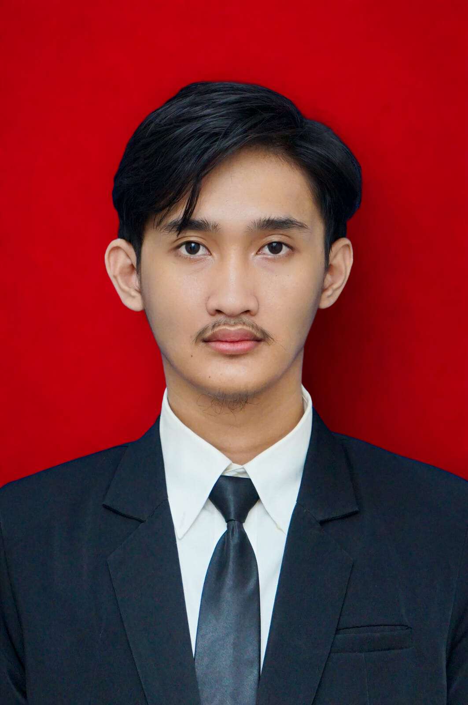

Seminar Pendidikan Profesi Guru · 2026
Belajar untuk menuntun, bertumbuh untuk berdampak.
Catatan perjalanan reflektif Fadhlan Manggara Dwi Tama dalam membangun pembelajaran sekolah dasar yang bermakna, adaptif, dan berpihak pada peserta didik.
- 6
- Refleksi Semester I
- 4C
- Kerangka refleksi
- 1
- Tujuan: berdampak

Jelajahi portofolio
Setiap perjalanan punya ruangnya
PPL Mandiri Siklus 2–4
Perumus Pancasila, Bangun Ruang, dan Warna Panas–Dingin: perangkat, video, bukti evaluasi, serta refleksi.
Buka tugas UAS →UTS · E-Portofolio 1PPL Mandiri Siklus 1
Soal Cerita Matematika kelas II: perangkat, video praktik, analisis, dan rekap hasil belajar.
Buka tugas UTS →LK 1Identifikasi Diri
Visi pendidikan Indonesia, visi sebagai calon guru, dan rencana tindakan.
Buka halaman →LK 2Refleksi Semester I & II
Pengalaman belajar dengan kerangka 4C dan artefak pendukung.
Buka halaman →Perjalanan profesionalRefleksi PPG
Pembelajaran menyeluruh dan rencana tindak lanjut.
Buka halaman →E-Portofolio 1PPL Mandiri
Enam analisis praktik Bangun Ruang kelas II, refleksi, dan kegiatan nonmengajar.
Buka halaman →Karya pendidikanKarya Inovatif
Akses situs interaktif karya inovatif pembelajaran.
Buka halaman →Bukti dukungDokumen & Dokumentasi
13 modul ajar, evaluasi, dan 11 foto kegiatan pembelajaran.
Buka halaman →